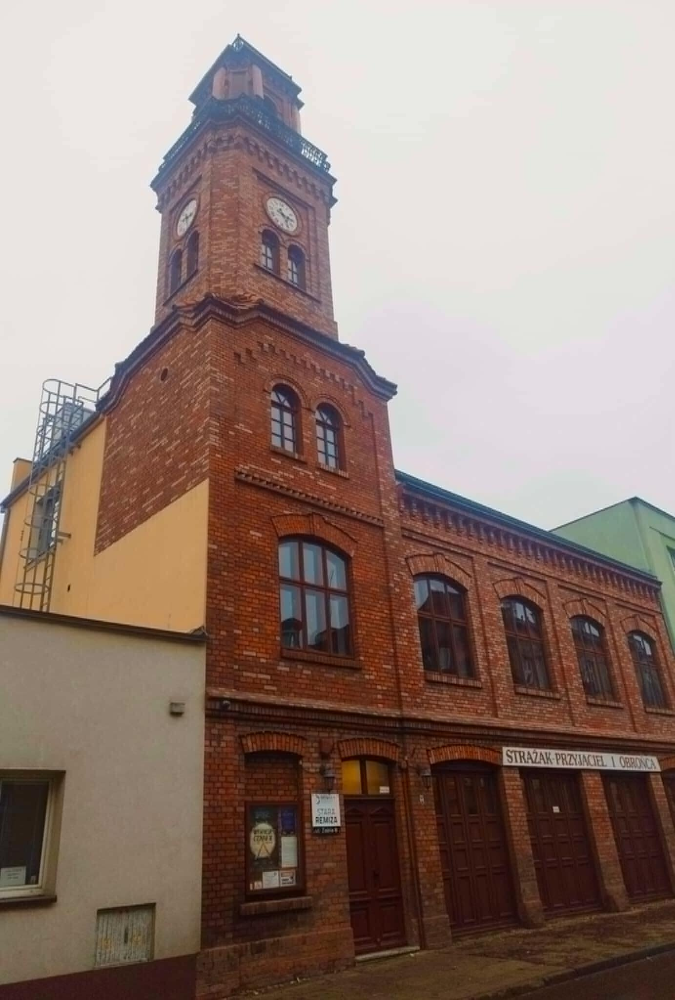

Budynek remizy straży pożarnej
Budynek przy ul. Żabiej 8 we Włocławku, który dziś mieści Klub „Stara Remiza”, został wzniesiony w XIX wieku jako pierwsza siedziba Miejskiej Straży Ogniowej. Przez sto lat, od 1874 do 1974 roku, pełnił funkcję strażnicy, będąc symbolem miejskiej ochrony przeciwpożarowej. W 1909 roku frontowa ściana Sali Zebrań ozdobiona została monumentalnym malowidłem „Wyjazd do pożaru” autorstwa Józefa Bergmana, oprawionym w złoconą stiukową ramę. W 1974 roku budynek zmienił swoją funkcję i stał się siedzibą Muzeum Pożarnictwa, które działało tam do 1989 roku.
Po zamknięciu muzeum budynek przez wiele lat stał nieużywany, aż w 2002 roku przekazano go włocławskiemu samorządowi. Przeprowadzono prace renowacyjne, odrestaurowano m.in. zabytkowy zegar na wieży oraz imponujące malowidło ścienne w Sali Zebrań. 17 listopada 2003 roku w trakcie uroczystej sesji Rady Miasta, inaugurującej działalność Klubu „Stara Remiza” jako śródmiejskiej filii Włocławskiego Centrum Kultury, po raz pierwszy odegrano z wieży hejnał Włocławka.
W 2012 roku, w ramach Lokalnego Programu Rewitalizacji Włocławka, Klub „Stara Remiza” przeszedł kompleksowy remont i został wyposażony w windę, co uczyniło go bardziej dostępnym i funkcjonalnym. Współfinansowany ze środków Europejskiego Funduszu Rozwoju Regionalnego projekt znacznie poprawił estetykę budynku oraz komfort użytkowników. Obecnie „Stara Remiza” jest dynamicznie działającym centrum kulturalnym, w którym odbywają się koncerty, recitale, prelekcje historyczne, wernisaże wystaw, a także spotkania w ramach cykli „Deser z kulturą” i „Gwiazdoteka”. Działają tu liczne sekcje i kluby, w tym Włocławski Klub Szachowy 1938 i Włocławskie Koło Modelarskie „Iskra”. Każdego dnia w południe z wieży rozlega się hejnał miasta, przywołując bogatą historię tego miejsca oraz jego dawne strażackie tradycje.
Źródło
